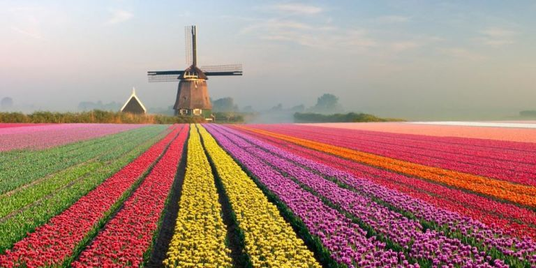

DIGITAL CLOCK
Waktu adalah kedisiplinan Tuhan dalam manusia (Time is the God's self-discipline in the lives of humans)
Central EUROPEAN Time (CET)- Amsterdam

Central INDONESIAN Time (WIT)-Kupang-Indonesia
Indochina Time (ICT)- Bangkok, THAILAND

Colombia Standard Time (COT)- Bogotá, COLOMBIA
Copyright by M.M.Soge